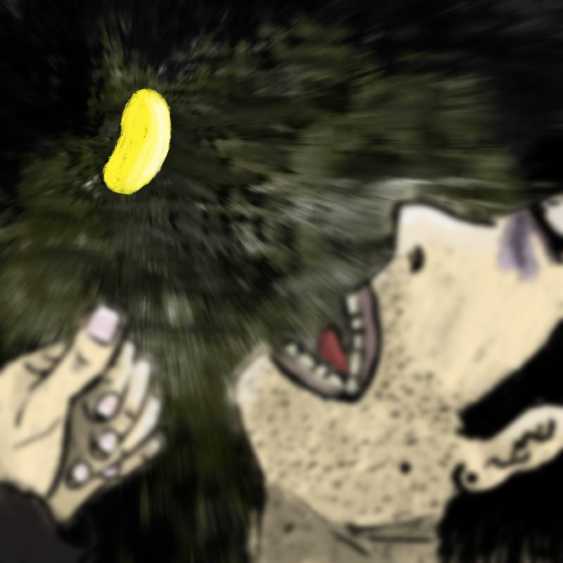

Creacover 2019 : J29
Publié le 11/02/2019 dans Dessin.
La musique du jour est All This Useless Energy de Jeff Rosenstock.
Voici une musique assez déplaisante. Ce qui est le cas de presque toutes celles que j’ai proposées pour ce défi. Au bout d’un moment, puisqu’il fallait choisir des musiques nouvelles que les autres ne connaissaient pas, j’ai fini par les piocher aléatoirement. C’est dur pour les oreilles et ça ne permet pas forcément de trouver l’inspiration, mais ça fait travailler dans différentes conditions, sur différents styles. C’est plutôt une bonne chose…
Pour ce titre, j’ai lu les paroles et un peu extrapolé leur sens. Je vois donc un type blasé de la vie qui a l’impression de se fatiguer pour tout, pour rien. Il prend des pilules afin d’avaler la dure réalité.
